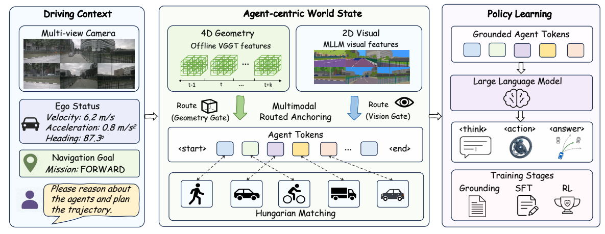

AgentWorld
规划时，模型在看哪辆车？
Learning Agent-Centric Vision-Language-Action World Models for Autonomous Driving
一次会车，决定自车要不要让行的是哪辆车会在什么时候靠近。AgentWorld 把每个重要交通参与者的信息放在模型可以单独引用的位置，让预测“对方会怎么走”和决定“我该怎么走”用得上同一份信息。论文最扎实的发现是，保留这些对应关系，规划对编号改名很稳定；一旦把车与状态配错，轨迹误差和碰撞率都会上升。它还在驾驶仿真中提高了成功率。周围车辆会怎样回应自车的不同动作，仍是另一道需要验证的问题。〔表 4、8、9〕
右边有两辆车，一句话怎样连到六个路点？
论文图 5 的第一个场景里，右侧两辆车把可通行空间挤窄，前方远处还有一名行人。模型的解释把右侧两车称为 <agent_3> 和 <agent_5>，指出 3 号最近，同时把远处那名行人和眼前风险区分开。它给出横向、纵向两个动作标签，最后输出未来 3 秒的六个自车路点，每 0.5 秒一个，坐标单位为米。读者因此可以顺着一句理由找到它指的是画面里的谁。〔图 5 场景一〕
一个编号，实际包含两层东西。写出来的 <agent_3> 是词表里的一个特殊符号，方便语句点名。模型在这个位置算出的隐藏状态是一串随场景变化的连续数值，承载车型、方位、运动和周围情境等信息。可以把前者想成卡名，后者想成卡的内容。换个场景，3 号可以指行人，也可以是空位。推理时不会有人先把框坐标写在卡上交给模型。〔§3.1–3.3，式 2–4〕
这篇文章改变的是规划器读到的中间结果。较早的做法先预测未来画面，再从大量图像符号中找出有用的运动线索。一个整场景向量也能压缩画面，但单独询问“那辆车离我多远”比较困难。AgentWorld 保留相机观测、导航指令等上下文，让规划器额外读取按对象组织的隐藏状态。式（4）同时给策略当前上下文和这些状态，因此视觉、道路背景和自车信息仍可能直接影响决策。〔§2.2、§3.1〕


没人规定 3 号是汽车，它怎样学会指向一辆真车？
先决定什么值得占一个位置
默认只有 20 个位置。制作训练样本时，作者先给标注物体打“影响分”。当前分考虑距离、车道关系和相互接近的速度；未来分则看接下来 3 秒物体和专家自车轨迹的最小距离、出现危险的时间、是否进入自车行驶走廊。两项按 0.45 和 0.55 混合，再乘类别权重，行人、自行车等弱势交通参与者权重较高。只选得分靠前的 K 个，K 不超过 20。远一点但将横穿车道的行人因此有机会排在近处静止车辆之前。未来真值用在离线选择训练目标，上线时模型须从可见观测自己估计。〔附录 A.1，式 12–15，算法 1〕
让每个位置从两种证据里找人或车
每个特殊符号自己的可学习向量，经投影后就成了一个查询。它分别去读取两组特征：预先算好的 VGGT 风格时空几何特征提示距离、布局与运动；视觉语言模型自己的二维视觉特征提供外观和语义。两条分支各有独立门控，同一个查询可以同时利用两者。交叉注意力从各自的特征里取信息，再与原查询融合。默认重复三层，最后把结果投影回相应的符号位置，由多模态大语言模型结合上下文更新。这个过程形成了可区分的候选对象，具体对应谁还要靠监督确定。〔图 4，式 5–9，附录 A.3〕
用一对一匹配固定“这次指的是谁”
训练时，一个共享的小预测头从每个隐藏状态读出类别或存在性、三维框和未来轨迹。匈牙利匹配在整组预测与选中对象之间求一对一分配。有匹配的槽位接受分类、框和轨迹误差；空余位置学“这里没有对象”，其损失权重为 0.1，避免空位太多掩盖真正的目标。这样，多个槽反复描述同一辆显眼汽车并不能覆盖训练目标。这个约束作用于当前样本，尚不足以保证遮挡前后一直用同一个编号。〔§3.2，式 10；附录 A.3，式 25〕
学会认车之后，怎样学会为它让行？
第一阶段教模型看懂卡。物理对齐训练 12 轮，更新语言视觉主干、特殊符号、路由和预测头，离线几何编码器保持冻结。第二阶段教模型用卡作答。作者用第一阶段的模型重跑训练集，把匹配到的编号与专家自车轨迹结合。短理由只提会影响本次决策的对象，高层动作从专家轨迹推导，最后一项直接监督专家路点。理由可由较强的多模态模型根据图像、车速和匹配好的物体信息生成；策略看到的感知字段只有编号。由此学到的是模仿有对象依据的解释和驾驶示范。〔§3.3，式 11；附录 A.1，图 7–9〕
第二阶段也训练 12 轮。路由和辅助头冻结，前期使用完整的训练辅助输入，中期逐步丢弃，末期只保留部署时可用的多模态模型输入输出。这样安排解决了一个具体问题：如果训练时每次都有额外几何特征帮忙定位，撤掉它以后，语言模型可能只记得卡名。〔附录 A.3，式 27〕
同一幕生成八份驾驶方案，用什么判高下？
第三阶段用群组相对策略优化（GRPO）训练 1 轮。每个场景采样八份“理由、动作、路点”，按同一场景内的相对奖励调整策略，用上一阶段模型作参考。评价分成格式、感知字段、动作、轨迹、参与者交互五项。容易误读的是感知字段奖励：它检查特殊符号集合是否齐全、合法；要判断物理风险，还得在奖励侧用冻结的预测头，从活跃槽位解码周围参与者的预测轨迹。动作奖励用专家高层动作的 F1，轨迹奖励考虑专家模仿和平滑性。〔附录 A.2–A.3，式 19–24〕
对每条候选自车轨迹，作者在同一未来时刻计算自车和每个相关参与者的距离，再取全程最小值，并找出首次低于安全间距的时间。危险阈值内的接近、净距不足和过早接近都会扣分。如果两车先后经过同一地点，轨迹线在图上相交，时间上可能仍有充足余量。冻结的头只负责训练时打分，部署时由多模态模型直接生成理由、动作和路点。〔式 21–24，附录 A.3〕
同一个交叉点，什么时候构成风险？
- 所选时刻的间距
- 0.0 米
- 全程最小间距
- 0.0 米
- 首次低于间距阈值（TTC）
- 2 秒
换一种表示、配错一辆车、真的闭环开，分别证明了什么？
同一批对象，怎样交给规划器更好？
表 8 的比较最接近论文的核心主张。在 nuScenes 开环验证中，作者报告三组使用相同骨干、可用参与者信息、监督和 SFT + RL 流程。平均 L2 衡量自车预测路点与记录中专家路点的距离，单位为米；碰撞率按数据集评测计算，两者都越低越好。
| 规划器读取的表示 | 平均 L2（米） | 碰撞率 |
|---|---|---|
| 整场景隐向量 | 0.49 | 0.23% |
| 结构化文字 | 0.58 | 0.21% |
| 逐个参与者的隐藏状态 | 0.27 | 0.08% |
这里的重要区别是，三组都有参与者信息。仅把同一批信息写成文字，碰撞率比整场景向量略低，但路点误差反而更高。给每个对象留一个可直接读取的向量，两项同时改善。这支持作者对信息组织方式的判断；表中并没有证明所有文字或整场景表示在其他训练预算下都只能达到这个水平。
只换卡名，对比把车和卡配错
只看到误差降低，仍可能怀疑那些卡只是装饰。表 9 对同一个已训练模型做干预。保持卡与车的对应关系，只一致地重排编号，L2 为 0.27 ± 0.01 米，碰撞率为 0.08 ± 0.03%，与原始的 0.27 米、0.08% 接近。故意让编号与物理状态错配，L2 升到 0.63 ± 0.04 米，碰撞率升到 0.74 ± 0.09%。绝对变化分别是 0.36 米和 0.66 个百分点。卡名本身可以任意取，配对关系却会影响轨迹。这个对照衡量对象配对对规划指标的整体影响。要判断模型说出的每句话是否忠实，还需要逐例核对。〔表 9；± 照录原表〕
图像和自车状态，模型各依赖多少？
图 2 比较有无图像的结果。AgentWorld 的平均序列长度为 98 个符号，VLA-World 为 653 个；这是整段序列的统计，前面的 20 指对象槽位数。移除图像后，两者的平均 L2 分别从 0.62 升到 1.07 米、从 0.83 升到 1.15 米。图 6(c) 改做另一种干预，仅去掉额外自车状态，AgentWorld 从 0.40 升到 0.45 米，VLA-World 从 0.42 升到 0.83 米。两幅图各有自己的对照设置，不能用图 2 的 0.62 和图 6 的 0.40 来算提升。它们支持“预测会利用图像，对额外自车状态依赖较小”；模型究竟读对了哪些视觉线索，还要结合表 9 或逐场景检验。
图 6(b) 也限制了怎样理解“20”。无额外自车状态时，1、4、8 个槽位的平均 L2 分别约 0.32、0.28、0.27 米，8 至 30 在图上基本持平。检测指标还可能随槽位增加而改善。检测到更多物体和让平均规划误差继续降低是两项不同任务。默认 20 是作者结合目标数量分布所做的容量取舍，在超拥挤场景里仍需要优先选择。〔图 6、10，附录 A.7〕
同骨干的开环优势有多大？
表 1 中两组都使用 Qwen2-VL-2B 和额外自车状态。按 UniAD 协议，VLA-World 到 AgentWorld 的平均误差从 0.42 降到 0.40 米，平均碰撞率从 0.12% 降到 0.11%。按 ST-P3 协议，相应数字是 0.26 到 0.25 米、0.08% 到 0.07%。两套协议应各自比较。相对同类完整系统，提升小于把 AgentWorld 自己的对象配对打乱所造成的退化。主比较采用固定种子，论文没有给这几项小差值的跨种子区间。〔表 1，NeurIPS Checklist 第 7 项〕
辅助任务帮我们判断卡里学到了什么。在 nuScenes 检测上，AgentWorld 的平均精度 mAP 为 0.318，综合检测分 NDS 为 0.416；表中 PGD 为 0.305、0.409。高层动作上，七类中六类的 F1 超过 VLA-World，例如停车由 81.24% 到 84.56%；直行则是 95.14%，略低于 VLA-World 的 95.88%。这些结果说明模型学到了可供读出的物体与动作信息，不过检测正确、说对动作、给出合适路点各有各的检验。〔表 2、3〕
把自己开的下一步也算进去
开环评测拿预测去对照已录制的驾驶过程，一次偏差不会改变下一帧。Bench2Drive 在 CARLA 里闭环运行，自车执行动作后会看到新的场景，走偏会影响后续驾驶。AgentWorld 的驾驶分为 81.17，AutoVLA 为 78.84；无严重违规并完成路线的成功率为 61.36% 对 57.73%，高 3.63 个百分点。舒适度为 54.39 对 39.33，效率为 147.82 对 146.93，VAD 的效率更高，为 157.94。效率衡量相对于参考交通流的速度，超过 100 是可能的。这张表验证了整套策略的仿真闭环表现；其中没有同一骨干只更换三种表示的闭环实验，不能把 3.63 个百分点都归给对象槽位。〔表 4，附录 A.5〕
收益来自物理监督、强化学习，还是额外计算？
表 5 中完整模型 L2 为 0.27 米，训练时去掉几何锚定为 0.30，去掉二维视觉锚定为 0.28。表 6 从原始 2B 模型的 1.37 米，经监督微调降到 0.32 米，再加 RL 到 0.27 米。表 12 单独移除动作、参与者交互、轨迹奖励，分别得到 0.29、0.30、0.32 米。轨迹模仿与对周车留出空间都提供了有用信号；表 12 的观测量只有 L2，无法单凭它判定哪一项减少了多少碰撞。
更大的骨干也有影响：7B 版本得到 0.25 米，Qwen2-VL-2B 和 Qwen2.5-VL-3B 均为 0.27 米。表 7 在无额外自车状态的设置报告一次推理延迟，AgentWorld 为 0.31 秒，VLA-World 为 0.40 秒，FSDrive 为 0.36 秒。这个比较支持减少未来画面生成开销的工程动机。论文的训练使用四张 80 GB A800，另有几何特征预提取；表 7 的模型延迟不足以估计车端从采集到执行的尾延迟。〔§4.1，表 7、11〕
会用对象的运动信息，离理解交通互动还有多远？
预测对方怎么走，与预测对方会怎样回应我，差一步。附录的奖励侧用预测出的周车轨迹评价自车候选轨迹的间距。这样能学习避开预计的冲突点。若要说模型懂得“我先向前探，对方便会减速让我”，需给同一初始场景指定不同自车动作，并检验相应周车反应是否预测准确。本文的置换实验和 CARLA 总分都没有直接测这件事。附录 A.6 的误差上界也依赖两个假设：规划代价由参与者状态决定，且代价的变化不超过状态误差乘以某个常数。红灯切换或可行驶区域突然收窄时，固定周车状态仍可能改变正确动作；模型还能从原图获取这些线索，理论假设与整车能力要分别理解。〔式 4、21–23、31–35〕
远处危险对象可能提前进入训练视野。筛选监督目标时使用专家未来路线和物体未来标注，很适合教模型注意即将冲突的人。但如果驾驶者选择另一条路径，相关物体的排序也可能改变。平均成绩无法说明固定的 20 个槽是否漏掉了极端拥挤、遮挡后突然出现的目标。一个有区分力的检验，是按目标密度和遮挡分组，同时报告关键对象覆盖率与碰撞率，并检查重新出现的对象是否保持身份。这是本解读提出的验证，作者也把跨时间的身份一致性列为后续方向。〔附录 A.1、A.7–A.8，§5〕
能指出哪辆车，也要核对说的和做的是否一致。回看图 5 场景一，理由建议自车稍微减速并多留右侧间距，高层动作却写着保持速度、保持车道。这可能与离散动作标签的阈值或自然语言表述有关，仅凭这一个例子无法定因。它给出了比“看起来说得通”更好的检查方式：把文字里的对象、动作标签和实际路点放回同一场景比较。表 9 已表明配错对象会损害规划；要评价每句话对决策有多忠实，还需要面向具体对象、理由与动作的一致性检验。
回到最初的两张卡。如果你起初怀疑模型只记编号，一致改名是能否定该猜想的对照。如果你担心它只凭车速和图像规划，错配造成的损失表明它也会用对象状态。由这些结果可以支持的设计判断是，把关键交通参与者做成可引用、可干预的世界状态，确实给规划增加了有用的信息通路。现实道路安全、长时身份跟踪和对他车反应的因果预测，需要各自的证据。
原文、实验表与演示
Guoqing Wang、Pin Tang、Xiangxuan Ren、Chao Ma，上海交通大学。论文于 2026 年 11 月 17 日提交至 arXiv，获 NeurIPS 2026 接收。本页图表编号对应 34 页的 v1 版本。arXiv 记录 · 作者项目与驾驶演示
- 从输入、对象对齐读到部署。图 3–4 和式 1–11 · 训练样本构造、奖励和训练阶段
- 核对整套系统与核心机制的证据。表 1–4 与图 5 · 图 6 与表 8–9 · 附录消融与数量分布